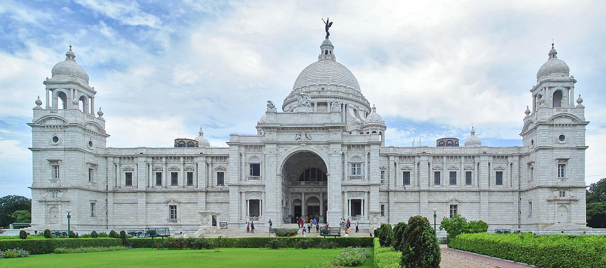
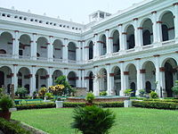
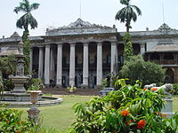
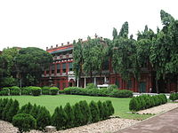
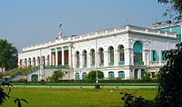

|
|
Museums and libraries

The Victoria Memorial
Victoria Memorial was Lord Curzon's brainchild as a memorial to the Empress of India and Queen of the United Kingdom, Queen Victoria after her death in 1901, the Victoria Memorial was modelled on the Taj Mahal and was commissioned in 1906. Opened to the public in 1921, it was designed by the architects William Emerson and his protege Vincent Esch at the extraordinary cost of Rupees 10.5 million ($262,500), all of which was collected as voluntary donations, mostly from the British and Indian nobility. The memorial holds numerous paintings of the British royal family, miniature paintings of the Mughal School, oil paintings of the Company School (notably the uncle - nephew pair of Thomas Daniell and William Daniell), historical artefacts like the throne of the Nawab of Bengal, many lithographs and documents of historical interest, and various post-Raj artefacts significant in the history of Kolkata (added to the collection after independence). The memorial is set in extensive and beautiful lawns, and is lit up at night. A laser audio-visual show is held on the lawns every evening. 'Nike', the Greek Goddess of victory, on the top of the museum is said to be haunted, and has been prominently featured in many Kolkata stories and novels. It is regarded with pride and joy in Kolkata and colloquially referred to as the "Victoria".

The courtyards and gardens inside the Indian Museum
The Indian Museum is the largest museum in Asia and the oldest in the Asia - Pacific region (est. 1814 at the location of the Asiatic Society). The Museum shifted to its present sprawling residence in 1875. Situated on Chowringhee Avenue (now J.L. Nehru Road), it houses perhaps the greatest collection of Indian natural history and an Indian Art collection to rival the Smithsonian Institution and the British Museum. Of specific note are the meteorite hall and dinosaur hall in the Natural History and Geology section, the numismatics section and the collections of Gandhara Art, Burmese woodwork, Mughal miniatures and Tibetan banner sections in the Indian Art section. The Anthropological Survey of India headquarters and the Government College of Art and Craft are housed in the same building. The Geological Survey of India headquarters moved from the museum to Bidhan Nagar recently. The Indian Museum has a library of excellent historical value, with a special focus on the Raj and Kolkata.

The privately owned Marble Palace
The Marble Palace is a privately owned collection of eclectic sculptures, paintings and a small menagerie and aviary off Chittaranjan Avenue in North Kolkata. Built by Raja Rajendra Mullick in 1835, it houses, among other treasures two little-publicized Reubens and a Joshua Reynolds, not to mention over 50 varieties of marble which grace the interiors of this mansion.

The facade of Jorasanko Thakur Bari
The Jorasanko Thakur Bari is the ancestral home of the Tagore family and was converted into a museum in 1961. The huge sprawling brick mansions were the cultural hub of Kolkata for close to a century and was a major force in the women's liberation movement. It hosted the first Brahmo wedding and was an important center in the Independence movement. The museum has three large galleries - one of the life and works of Rabindranath, a second gallery about his close relatives such as father Debendranath Tagore, Abanindranath Tagore, Gaganendranath Tagore and others, and a third gallery on the Bengal Renaissance in general.

Science City
Science City is a complex near the Eastern Metropolitan Bypass featuring a lot of interactive science and live bioscience exhibits, as well as having Kolkata's first OMNIMAX theatre.

The Birla Industrial & Technological Museum
Birla Industrial & Technological Museum on Gurusaday Dutta Road, was inaugurated in 1959 as the first popular science museum in Asia. Modelled on the Deutsches Museum, it has interactive popular science exhibits and a significant collection of historical industrial holdings in India. Its collection of old gramophones, sound recorders, telephones, steam engines, road rollers and other industrial machinery of the period 1880–1950 is very significant. The museum sports a vintage model of the Rolls-Royce Phantom I make. It also actively organizes summer camps, awareness programs and astronomy observations for school children.

National Library
National Library of India located in Alipore is India's leading library and a public library. It was inaugurated in 1836 by the Governor General Lord Metcalfe by transferring 4675 books from the College of Fort William. Public donations were the main source of books for the library, and by donations of Rupees 300 from proprietors. Dwarakanath Tagore was the first proprietor of the library. The library was initially only partially public, as poor students could use the library for a limited period of time. The Imperial Library was founded in 1891 by merging several libraries like those of the East India College and East India Board. Governor General Lord Curzon initiated the merger of these two libraries into a single Imperial Library in 1903 at the Metcalfe Hall. The goals of the library were to collect every book written about India at any time. The Assistant Librarian of the British Museum John Macfarlane was the first librarian and was succeeded by the first Indian librarian Harinath De. The library was moved to its present quarters in Belvedere Estate, Alipore and renamed the National Library. It is a fully public library which co-ordinates the activities of all other Indian public libraries. True to its goal, any book published in India today has to send one copy to the National library in the spirit of the Library of Congress, United States.
go to top
Home
Developed by SUGATO CHAKRABORTY (currently pursuing B.Tech in CSE from West Bengal University of Technology, developer at Boscom Software,2014)
|
|